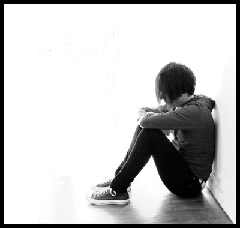

Kræftens Påvirkelse
Kræften påvirker ikke kun den syge, den pårviker alle pårørende. Søg for at snakke med nogen hvis du eller nogen i din familie har kræft.

Råd til pårørende
Få gode råd og hjælp til livet som pårørende til en kræftpatient - uanset om det er et familiemedlem, en ven eller kollega, der har kræft.
Børn og unge
Her kan du læse om børns behov, hvis deres mor eller far skal dø, og når de har mistet en forælder. Du kan få inspiration til at forberede børnene på en forælders død, f.eks. ved at tale om minder I har sammen.